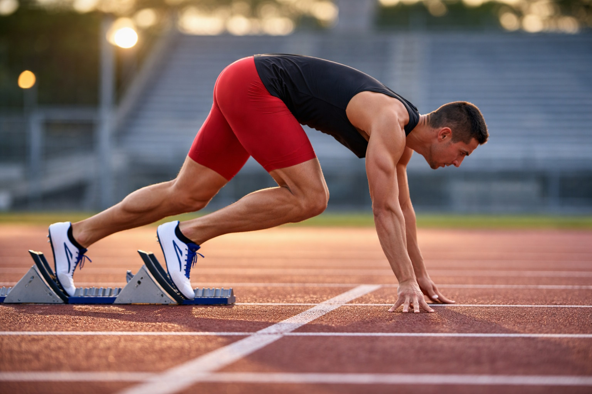
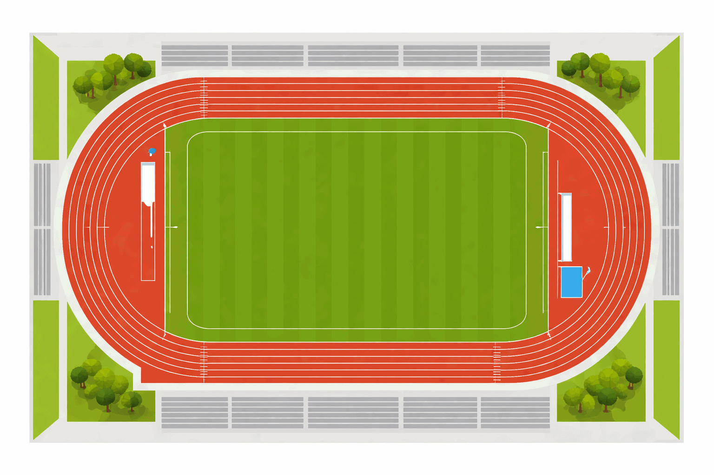
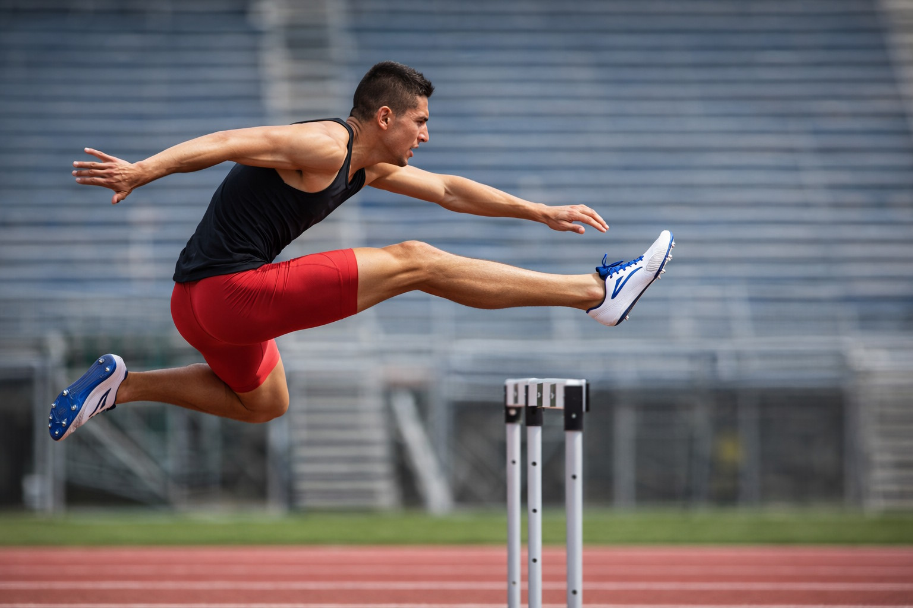

Εισαγωγή
Φαντάσου ότι στέκεσαι στη γραμμή εκκίνησης ενός αγώνα δρόμου. Η καρδιά χτυπά γρήγορα, τα πόδια είναι έτοιμα να εκτιναχθούν μπροστά. Εκείνη η στιγμή δεν εξαρτάται μόνο από την αντοχή σου, αλλά και από την τεχνική σου, τη στρατηγική σου και τη γνώση σου.
Τα δρομικά αγωνίσματα αποτελούν τον πυρήνα του κλασικού αθλητισμού. Από τα 100 μέτρα ταχύτητας ως τον μαραθώνιο των 42 χιλιομέτρων, κάθε αγώνισμα έχει τη δική του λογική, τους δικούς του κανόνες και απαιτεί διαφορετικές ικανότητες από τον/την αθλητή/τρια.
Σε αυτή τη σελίδα θα ανακαλύψεις:
- Ποια είναι τα κύρια δρομικά αγωνίσματα.
- Ποιοι κανόνες τα διέπουν.
- Ποια τεχνική χρησιμοποιούν οι αθλητές/τριες.
- Τι ιδιαίτερες ικανότητες χρειάζεται να αναπτύξεις για να διαπρέψεις σε καθένα από τα δρομικά αγωνίσματα.
Κατηγορίες Δρομικών Αγωνισμάτων
Τα δρομικά αγωνίσματα χωρίζονται σε τέσσερις μεγάλες κατηγορίες:
| Κατηγορία | Αγωνίσματα |
|---|---|
| Δρόμοι Ταχύτητας (Σπριντ) | 100μ, 200μ, 400μ |
| Δρόμοι Μέσων Αποστάσεων | 800μ, 1500μ |
| Δρόμοι Μεγάλων Αποστάσεων | 5.000μ, 10.000μ |
| Δρόμοι Εμποδίων | 110μ εμπόδια (ανδρών), 100μ εμπόδια (γυναικών), 400μ εμπόδια, 3.000μ στιπλ |
| Δρόμοι Δρόμου (Road Events) | Ημιμαραθώνιος (21,097χλμ), Μαραθώνιος (42,195χλμ) |
Βασικοί Κανονισμοί
Εκκίνηση
Οι κανόνες των δρομικών αγωνισμάτων καθορίζονται από τη World Athletics (Παγκόσμια Ομοσπονδία Στίβου) και ισχύουν διεθνώς.
Εκκίνηση:
- Στα αγωνίσματα έως και 400μ οι αθλητές/τριες εκκινούν από χαμηλή θέση εκκίνησης με χρήση τεχνικού υποβοηθητή εκκίνησης.
- Στα αγωνίσματα από 800μ και πάνω χρησιμοποιείται η όρθια θέση εκκίνησης.
- Η εκκίνηση γίνεται μετά τις εντολές: «Στις θέσεις σας» → «Έτοιμοι» → πιστολιά ή ηχητικό σήμα.
- Ψευδής εκκίνηση: Αν ο/η αθλητής/τρια κινηθεί πριν το σήμα, αποκλείεται (από το 2010, ισχύει μηδενική ανοχή — ακόμα και η πρώτη ψευδής εκκίνηση οδηγεί σε αποκλεισμό).

Βασικοί Κανονισμοί
Διαδρομή — Πίστα
Οι κανονισμοί στα δρομικά αγωνίσματα έχουν ως στόχο να εξασφαλίζουν δίκαιο ανταγωνισμό και σωστή διεξαγωγή του αγώνα. Οι αθλητές/τριες πρέπει να είναι απόλυτα συγκεντρωμένοι/ες στην εκκίνηση, καθώς ακόμη και μία πολύ μικρή κίνηση πριν από το σήμα μπορεί να θεωρηθεί παράβαση. Για τον λόγο αυτό χρησιμοποιούνται σύγχρονα συστήματα ανίχνευσης κινήσης, τα οποία βοηθούν τους/τις κριτές να εντοπίζουν με ακρίβεια τις ψευδείς εκκινήσεις.
Διαδρομή — Πίστα:
- Η επίσημη πίστα έχει μήκος 400 μέτρα και αποτελείται από 8 διαδρόμους πλάτους 1,22μ έκαστος.
- Στα αγωνίσματα έως 400μ (και 4×400μ σκυταλοδρομία) οι αθλητές/τριες τρέχουν ο/η καθένας/καθεμία στον δικό του/της διάδρομο από αρχή έως τέλος.
- Στα 800μ οι αθλητές/τριες αρχικά τρέχουν σε διαδρόμους και μετά από συγκεκριμένο σημείο επιτρέπεται η συγχώνευση.
- Από 1.500μ και πάνω η εκκίνηση γίνεται χωρίς διαχωρισμό διαδρόμων.
Βασικοί Κανονισμοί
Διαδρομή — Πίστα (Σχέδιο & Κατασκευή)
Η κατασκευή της πίστας στον στίβο είναι σχεδιασμένη με συγκεκριμένες προδιαγραφές, ώστε να εξασφαλίζεται η ασφάλεια και η ομαλή διεξαγωγή των αγώνων. Οι γραμμές και οι σημάνσεις βοηθούν τους/τις αθλητές/τριες να γνωρίζουν ακριβώς τη θέση και τη διαδρομή κατά τη διάρκεια του αγώνα, ενώ παράλληλα διευκολύνουν τους/τις κριτές στην παρακολούθηση της σωστής τήρησης των κανονισμών.

Βασικοί Κανονισμοί
Αγωνίσματα Εμποδίων
Τα αγωνίσματα με εμπόδια απαιτούν από τους/τις αθλητές/τριες να συνδυάζουν ταχύτητα, ρυθμό και σωστό συγχρονισμό στις κινήσεις τους. Η τεχνική στο πέρασμα των εμποδίων είναι ιδιαίτερα σημαντική, καθώς βοηθά τον/την αθλητή/τρια να διατηρεί την ταχύτητά του/της χωρίς να χάνει ισορροπία ή χρόνο κατά τη διάρκεια του αγώνα.
Κανόνες εμποδίων:
- 110μ εμπόδια (ανδρών): 10 εμπόδια ύψους 1,067μ, απόσταση μεταξύ τους 9,14μ.
- 100μ εμπόδια (γυναικών): 10 εμπόδια ύψους 0,84μ, απόσταση μεταξύ τους 8,50μ.
- 400μ εμπόδια: 10 εμπόδια ύψους 0,914μ (ανδρών) / 0,762μ (γυναικών).
- Η σκόπιμη ανατροπή εμποδίου επιφέρει αποκλεισμό, ενώ η τυχαία ανατροπή δεν τιμωρείται.
Βασικοί Κανονισμοί
Στιπλ (3.000μ με Εμπόδια)
Το αγώνισμα του στιπλ θεωρείται από τα πιο απαιτητικά αγωνίσματα του στίβου, καθώς συνδυάζει στοιχεία αντοχής και τεχνικής. Οι αθλητές/τριες πρέπει να έχουν καλή ισορροπία και σωστό ρυθμό, ιδιαίτερα κατά το πέρασμα από τη διάβαση του νερού, όπου απαιτείται σωστός υπολογισμός του άλματος για να διατηρηθεί η ταχύτητα στον αγώνα.
Κανόνες στιπλ:
- Αποτελείται από 28 εμπόδια και 7 διαβάσεις νερού.
- Τα εμπόδια είναι σταθερά (δεν πέφτουν) και ύψους 0,914μ (ανδρών) / 0,762μ (γυναικών).
- Οι αθλητές/τριες μπορούν να πατήσουν πάνω στο εμπόδιο (δεν επιβάλλεται να πηδήσουν πάνω από αυτό χωρίς επαφή).
Βασικοί Κανονισμοί
Τερματισμός
Στους σύγχρονους αγώνες στίβου η τεχνολογία παίζει σημαντικό ρόλο στην καταγραφή των αποτελεσμάτων. Οι ειδικές κάμερες του συστήματος φωτοφίνις καταγράφουν τη στιγμή του τερματισμού με πολύ μεγάλη ακρίβεια, επιτρέποντας στους/στις κριτές να ξεχωρίζουν ακόμη και πολύ μικρές διαφορές μεταξύ των αθλητών/τριών. Έτσι διασφαλίζεται ότι το αποτέλεσμα του αγώνα είναι δίκαιο και αξιόπιστο.
Κανόνες τερματισμού:
- Ο/Η αθλητής/τρια τερματίζει όταν το κορμί του/της (κορμός, χωρίς τα χέρια ή τα πόδια) περάσει το επίπεδο της γραμμής τερματισμού.
- Χρησιμοποιείται ηλεκτρονικό σύστημα χρονομέτρησης (photofinish) με ακρίβεια 1/1000 του δευτερολέπτου.
Τεχνική Εκτέλεσης
Τεχνική Σπριντ (100μ – 400μ)
Η τεχνική του σπριντ χωρίζεται σε τρεις φάσεις:
Φάση 1: Εκκίνηση και Επιτάχυνση (0–30μ)
- Ο κορμός είναι κεκλιμένος προς τα εμπρός (γωνία ~45°) για να αξιοποιηθεί η αδράνεια.
- Τα βήματα είναι σύντομα και δυναμικά, με έντονη ώθηση από τα μπλοκ.
- Τα χέρια κινούνται εναλλάξ με ενέργεια σε γωνία 90° στον αγκώνα.
Φάση 2: Μέγιστη Ταχύτητα (30–60μ)
- Ο κορμός ανορθώνεται σταδιακά (κατακόρυφη στάση).
- Τα βήματα επιμηκύνονται (ο/η αθλητής/τρια «κάθεται» στον αέρα).
- Η επαφή με το έδαφος γίνεται στο μπροστινό μέρος του ποδιού (акροποδητί).
- Ο στρόφιγγας του ισχίου είναι ο κυρίαρχος μοχλός παραγωγής ισχύος.
Φάση 3: Διατήρηση Ταχύτητας (60–100μ)
- Στόχος είναι η ελαχιστοποίηση της επιβράδυνσης (αναπόφευκτη μετά τα 60–70μ λόγω κόπωσης).
- Η χαλάρωση των μυών του προσώπου και του λαιμού βοηθά στη διατήρηση οικονομίας κίνησης.
Τεχνική Εκτέλεσης
Τεχνική Δρόμων Μέσων Αποστάσεων (800μ – 1500μ)
Στα αγωνίσματα μέσων αποστάσεων εκτός από τη φυσική κατάσταση, σημαντικό ρόλο παίζει και η σωστή στρατηγική του αγώνα. Οι αθλητές/τριες πρέπει να διαχειρίζονται την ενέργειά τους σε όλη τη διάρκεια της κούρσας και να επιλέγουν την κατάλληλη στιγμή για να αυξήσουν ταχύτητα, ιδιαίτερα στα τελευταία μέτρα πριν τον τερματισμό.
Στοιχεία τεχνικής:
- Στάση σώματος: Ελαφρά κλίση προς τα εμπρός, χαλαρός ώμος.
- Βηματισμός: Μεσαίο μήκος βήματος — ούτε τόσο κοντό όσο στο σπριντ, ούτε τόσο οικονομικό όσο στις μεγάλες αποστάσεις.
- Αναπνοή: Ρυθμική, συνήθως 2:2 (δύο βήματα εισπνοή, δύο εκπνοή) ή 3:2 (τρία βήματα εισπνοή, δύο εκπνοή).
- Τακτική: Σημαντικό ρόλο παίζει η θέση στην ομάδα (drafting — τρέξιμο πίσω από άλλον/α αθλητή/τρια για εξοικονόμηση ενέργειας) και η επιλογή της κατάλληλης στιγμής για το τελικό «φινάλε» (kick).
Τεχνική Εκτέλεσης
Τεχνική Δρόμων Μεγάλων Αποστάσεων (5.000μ – 10.000μ)
Στους δρόμους μεγάλων αποστάσεων η αντοχή και η σωστή διαχείριση της ενέργειας είναι ιδιαίτερα σημαντικές. Οι αθλητές/τριες προσπαθούν να διατηρούν έναν σταθερό ρυθμό σε όλη τη διάρκεια του αγώνα, αποφεύγοντας τις απότομες αλλαγές ταχύτητας που μπορεί να τους/τις κουράσουν γρήγορα. Η συγκέντρωση και η σωστή κατανομή των δυνάμεων βοηθούν τον/τη δρομέα να ολοκληρώσει αποτελεσματικά την μεγάλη απόσταση.
Στοιχεία τεχνικής:
- Οικονομία κίνησης: Ελάχιστη κατανάλωση ενέργειας για κάθε μέτρο που διανύεται.
- Στάση: Σχεδόν κατακόρυφη, χαλαρή.
- Πατημασιά: Ενδιάμεση (midfoot strike) ή ακροποδητί — αποφυγή «χτυπήματος» στη φτέρνα (heel strike) που αυξάνει τον κίνδυνο τραυματισμού.
- Ρυθμός: Ο/Η αθλητής/τρια επιλέγει έναν σταθερό ρυθμό (pace) που μπορεί να διατηρήσει για ολόκληρη την απόσταση.
Τεχνική Εκτέλεσης
Τεχνική Εμποδίων
Η επιτυχία στα αγωνίσματα με εμπόδια εξαρτάται σε μεγάλο βαθμό από τον σωστό ρυθμό και τον συγχρονισμό των κινήσεων. Οι αθλητές/τριες προσπαθούν να περνούν τα εμπόδια με ομαλή και γρήγορη κίνηση, ώστε να διατηρούν την ταχύτητά τους χωρίς μεγάλες διακοπές στον ρυθμό του τρεξίματος. Η συνεχής εξάσκηση βοηθά στην ανάπτυξη καλύτερου συντονισμού και ισορροπίας κατά τη διάρκεια του αγώνα.
- Προσέγγιση: 8 βήματα στο εμπόδιο (για τα 110μ ανδρών), στη συνέχεια 3 βήματα μεταξύ εμποδίων.
- Υπέρβαση: Το «μπροστινό πόδι» (lead leg) εκτείνεται οριζόντια πάνω από το εμπόδιο, ενώ το «πίσω πόδι» (trail leg) ακολουθεί με κάμψη γόνατος και πλαϊνή κίνηση.
- Στόχος: Ελάχιστη απώλεια ταχύτητας κατά την υπέρβαση — το εμπόδιο δεν αντιμετωπίζεται ως εμπόδιο, αλλά ως μέρος του σπριντ.
- Προσγείωση: Άμεση επαναφορά στον ρυθμό του σπριντ.

Αθλητικές Ικανότητες ανά Αγώνισμα
Κάθε δρομικό αγώνισμα απαιτεί διαφορετικό «προφίλ» ικανοτήτων:
| Αγώνισμα | Κύριες Ικανότητες |
|---|---|
| 100μ – 200μ | Εκρηκτική δύναμη, ταχύτητα αντίδρασης, νευρομυϊκός συντονισμός |
| 400μ | Ταχύτητα, ειδική αντοχή ταχύτητας, ψυχική σκληρότητα |
| 800μ – 1500μ | Αερόβια/αναερόβια ικανότητα, τακτική νοημοσύνη, ταχύτητα στο φινάλε |
| 5.000μ – 10.000μ | Αερόβια αντοχή, VO₂max, οικονομία τρεξίματος |
| Εμπόδια | Ταχύτητα, ευλυγισία, ρυθμός, τεχνική |
| Στιπλ | Αερόβια αντοχή, τεχνική εμποδίων, συντονισμός |
| Μαραθώνιος | Αερόβια αντοχή, αντοχή κόπωσης, ψυχική ανθεκτικότητα, διατροφική στρατηγική |
Συμπέρασμα
Κάθε αγώνισμα του στίβου απαιτεί διαφορετικό συνδυασμό φυσικών και τεχνικών ικανοτήτων από τους/τις αθλητές/τριες. Για τον λόγο αυτό, η προπόνηση προσαρμόζεται ανάλογα με το αγώνισμα, ώστε να αναπτύσσονται οι κατάλληλες δεξιότητες και η φυσική κατάσταση που χρειάζεται κάθε δρομέας για να αποδώσει καλύτερα στον αγώνα.